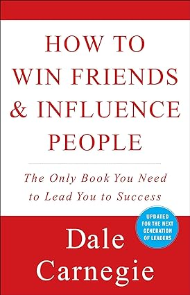

Summary:
Winning friends in the competitive world of today is one of life's biggest challenges. In fact it is an art. How to Win Friends and Influence People explains that nowadays people select friends and one should have distinguished qualities to make someone want to befriend you. It sounds quite materialistic but it is visible everywhere and in every walk of life. Influencing someone through one's personality is one of the mechanisms of gaining friends. This needs to be inculcated and practised. This book provides the basic skills through which one can attract people and capture their goodwill and attention. The book highlights human psychology and reveals to the reader the ways to connect with other auras of human existence and hence influence one another gradually. The success of a person definitely comes from wealth but a majority of it depends on how expressive a person is and how impressive he or she is. The book says that an impression is created only when a person makes others feel important or elevates them to a pedestal of significance. This is an art because at no point should the other person feel like you are manipulating him or her. How to Win Friends and Influence People was published in 1998 by Gallery Books. This reprint edition is available in paperback.